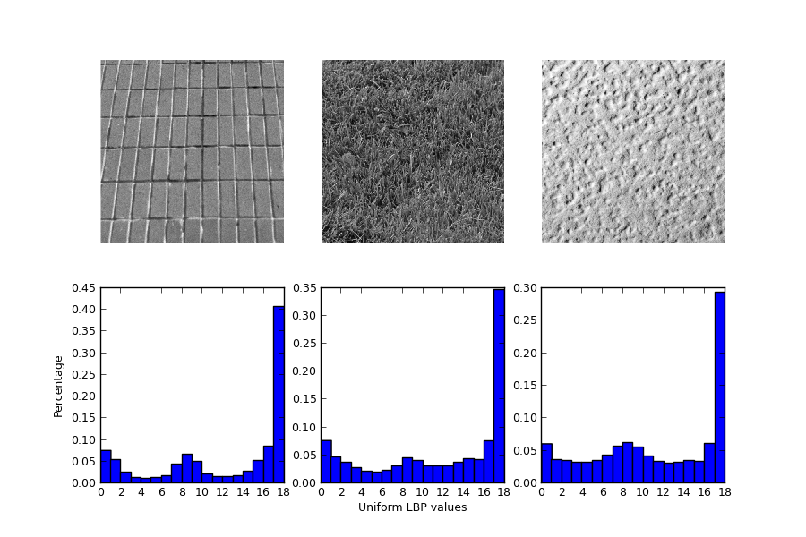

In this example, we will see how to classify textures based on LBP (Local Binary Pattern). The histogram of the LBP result is a good measure to classify textures. For simplicity the histogram distributions are then tested against each other using the Kullback-Leibler-Divergence.
import numpy as np
import matplotlib
import matplotlib.pyplot as plt
import scipy.ndimage as nd
import skimage.feature as ft
from skimage import data
# settings for LBP
METHOD = 'uniform'
P = 16
R = 2
matplotlib.rcParams['font.size'] = 9
def kullback_leibler_divergence(p, q):
p = np.asarray(p)
q = np.asarray(q)
filt = np.logical_and(p != 0, q != 0)
return np.sum(p[filt] * np.log2(p[filt] / q[filt]))
def match(refs, img):
best_score = 10
best_name = None
lbp = ft.local_binary_pattern(img, P, R, METHOD)
hist, _ = np.histogram(lbp, normed=True, bins=P + 2, range=(0, P + 2))
for name, ref in refs.items():
ref_hist, _ = np.histogram(ref, normed=True, bins=P + 2,
range=(0, P + 2))
score = kullback_leibler_divergence(hist, ref_hist)
if score < best_score:
best_score = score
best_name = name
return best_name
brick = data.load('brick.png')
grass = data.load('grass.png')
wall = data.load('rough-wall.png')
refs = {
'brick': ft.local_binary_pattern(brick, P, R, METHOD),
'grass': ft.local_binary_pattern(grass, P, R, METHOD),
'wall': ft.local_binary_pattern(wall, P, R, METHOD)
}
# classify rotated textures
print 'Rotated images matched against references using LBP:'
print 'original: brick, rotated: 30deg, match result:',
print match(refs, nd.rotate(brick, angle=30, reshape=False))
print 'original: brick, rotated: 70deg, match result:',
print match(refs, nd.rotate(brick, angle=70, reshape=False))
print 'original: grass, rotated: 145deg, match result:',
print match(refs, nd.rotate(grass, angle=145, reshape=False))
# plot histograms of LBP of textures
fig, ((ax1, ax2, ax3), (ax4, ax5, ax6)) = plt.subplots(nrows=2, ncols=3,
figsize=(9, 6))
plt.gray()
ax1.imshow(brick)
ax1.axis('off')
ax4.hist(refs['brick'].ravel(), normed=True, bins=P + 2, range=(0, P + 2))
ax4.set_ylabel('Percentage')
ax2.imshow(grass)
ax2.axis('off')
ax5.hist(refs['grass'].ravel(), normed=True, bins=P + 2, range=(0, P + 2))
ax5.set_xlabel('Uniform LBP values')
ax3.imshow(wall)
ax3.axis('off')
ax6.hist(refs['wall'].ravel(), normed=True, bins=P + 2, range=(0, P + 2))
plt.show()
Python source code: download (generated using skimage 0.8.0)